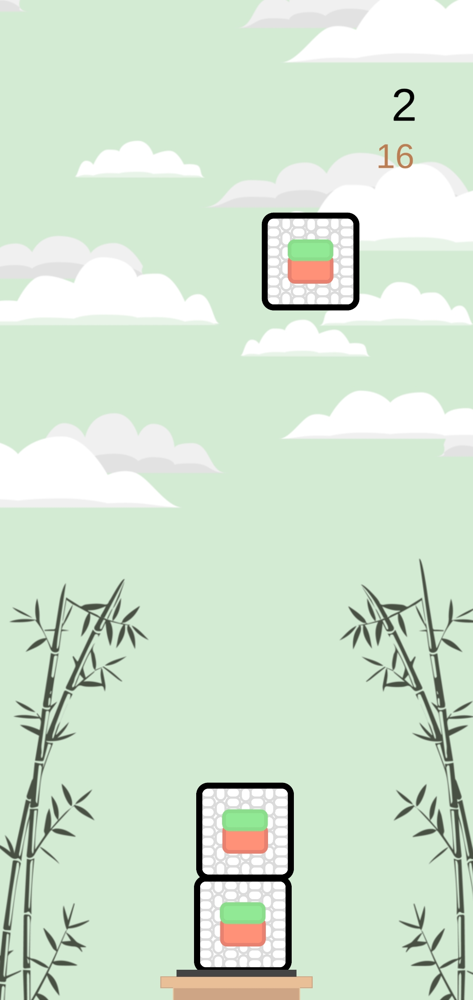
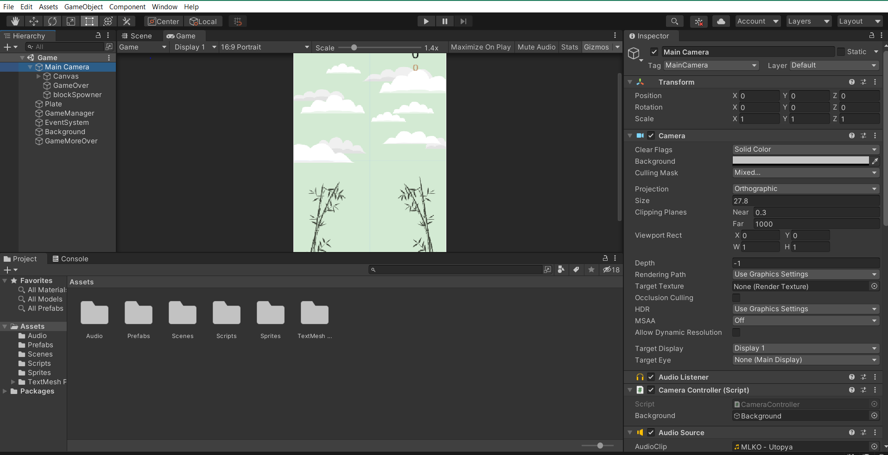
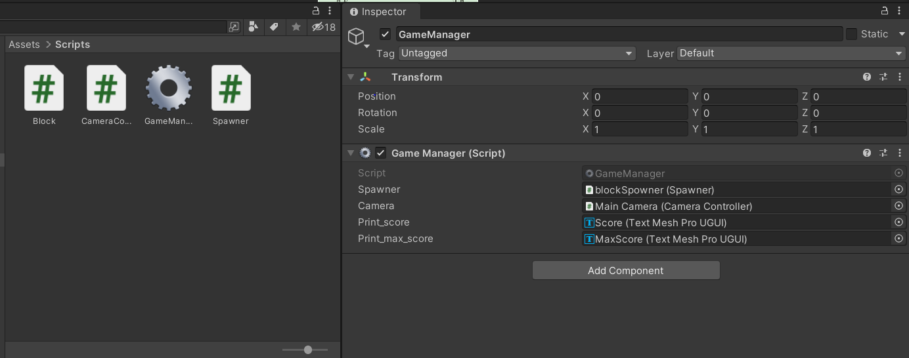

<!DOCTYPE html>
<html lang="fr">
    <head>
        <meta charset="UTF-8" />
        <meta name="viewport" content="width=device-width, initial-scale=1.0, maximum-scale=1.0, user-scalable=no">
        <title>Sushi Tower</title>
        <link rel="stylesheet" href="normalize.css">
        <link rel="stylesheet" href="style.css">
        <link rel="preconnect" href="https://fonts.gstatic.com">
        <link href="https://fonts.googleapis.com/css2?family=Righteous&display=swap" rel="stylesheet">
        <link href="https://fonts.googleapis.com/css2?family=Lato&family=Righteous&display=swap" rel="stylesheet">
        <link rel="icon" type="image/png" sizes="16x16" href="./img/block.png">
    </head>
</html>
<body>
    <div id="container">

        <div id="header">
            <div id="title">
                <h1>Sushi Tower</h1>
            </div>
            <div id="link1">
                <a id='project-link' href="https://www.dropbox.com/sh/p24409ryxaagljs/AABO0BlF3sIO1lIsmjrxJO9Ka?dl=0" target="_blank">Unity project</a>
            </div>
            <div id="link2">
                <a id='executable-link' href="https://www.dropbox.com/sh/zr24c5cy3ubcb8j/AAA77YJZVTedFSkX863FN4QDa?dl=0" target="_blank">Android version</a>
            </div>
        </div>

        <div id="wrapper">
            <div class="content">

                <div class="intro">
                    <h3> Introduction</h3>
                        <span class="margin-text">Dans le cadre d'un projet IMAC, spécialisation 3D , j'ai décidé de réaliser un mini-jeu d'empilement de blocks avec le moteur de jeu Unity Engine (2021.1.0f).</span>
                        <div class="center-img">
                            
                        </div>
                        <span class="margin-text">Le but du jeu est d'empiler le maximum de sushi. Je me suis inspirée du 
                            <a href="https://www.youtube.com/watch?v=4QP0ZTPUaI4" target="_blank">tutoriel</a>
                        suivant. J'y ai ajouté ce que j'ai appris durant cette dernière année à l'IMAC. </span>
                </div>

                <div class="architecture">
                    <h3> Architecture du projet</h3>
                        <span class="margin-text">Dans Unity Engine, le language est le C#, il s'agit d'un language orienté objet. Pour construire un jeu Unity, on fonctionne donc par classes.</span>
                        <div class="center-img">
                            
                        </div>
                        <span class="margin-text">Le projet se découpe en seulement quelques éléments.</span>
                        <div class="margin-text">
                            <h4> Les GameObjects</h4>
                            <ul> Visuels
                                <br><br>
                                <li>Blocks (sushis): Réalisé sous Illustrator, ce sprite est rattaché à un GameObject possédant un collider2D (gère les collisions), et un rigidbody2D (gère la graivité). Ces deux éléments sont appelés des components, on rattache des components à des GameObjects pour leur attribuer des propriétés </li>
                                <br>
                                <li>Plateform (assiette): Réalisé également sous Illustrator, cet objet ne possède qu'un collider2D pour les collisions avec les blocks.</li>
                                <br>
                                <li>Backgorund: Réalisé également sous Illustrator, il s'agit d'un Canvas, une projection en face de la caméra, cela peut être une image, du texte.</li>
                            </ul>
                        
                            <ul> Non visuels 
                                <br><br>
                                <li>MainCamera: Il s'agit d'un des éléments fondamentaux de Unity Engine. L'objet camera est le regard du joueur, c'est grâce à elle que l'on voit la scène en tant que joueur. Ici, pour ce mini-jeu 2D, on en a besoin que d'une. On choisit le format du jeu dans l'onglet game (ici 16:9)</li>
                                <br>
                                <li>Gameover/ GameMoreOver: On utilise deux empty objects auxquels on raccroche des components, ici un collider2D et un script. Ce script réinitialisera le jeu si la tour s'effondre ou si le block joué tombe à côté de la tour. Le gameOver gère le block joué et GameMoreOver les blocks déjà positionnés. </li>
                                <br>
                                <li>BlockSpawner: Il s'agit ici aussi d'un empty object qui possède un script. Il gère la création de nouveau bloc lorsque le suivant est posé.</li>
                                <br>
                                <li>GameManager: À cet empty object est rattaché le script du même nom. On gère les événements et les relations de cause à effet pour mettre en place la mécanique du jeu.</li>
                            </ul>
                        </div>
                        <div class="margin-text">
                            <h4> Les Scripts</h4>
                            <div class="center-img">
                                
                            </div>
                            <ul> Chaque script est "monobehaviour", c'est à dire qu'ils s'appliquent sur des GameObjects afin de les manipuler procéduralement.
                                <br><br>
                                <li>Block: Rattaché au prefab Block, il gère les différentes interactions du block : la chute, la pose sur la pile, les collisions, en conséquence le GameManager est appelé pour 'prévenir' la caméra et le spawner.</li>
                                <br>
                                <li>Camera Controller: Ce script sert à déplacer la caméra verticalement lorsque 3 blocks supplémentaires ont été empilés.</li>
                                <br>
                                <li>Spawner: Instancie un nouveau block en début de partie et lorsqu'un block est posé correctement sur la pile.</li>
                                <br>
                                <li>GameManager: il possède des champs publics, auxquels on rattache les objets cités précédemment. On va pouvoir les appeler et utiliser leurs méthodes/attributs accsesibles. Ainsi, selon les informations des différents attributs, d'autres sont appelés pour mettre en place toute la mécanique du jeu.</li>
                            </ul>
                        </div>
                </div>

                <div class="tips">
                    <h3> Première version et améliorations </h3>
                    <div class="margin-text">
                        <h4> Astuces de gameplay</h4>
                        <ul> Après avoir codé un jeu "fonctionnel", je l'ai testé et fait testé à mon entourage. Plusieurs bug sont alors apparus. 
                            <br><br>
                            <li>GameMoreOver: Il existe un premier objet GameOver, il s'agit d'un object qui détecte la chute du dernier block posé. En effet, si celui-ci ne reste pas sur la pile, le jeu recommence. Mais cela ne fonctionnait pas si la pile tombait après que l'on joue le nouveau block. J'ai donc rajouté un GameObject fonctionnant sur le même système que le premier GameOver, mais cette fois-ci, détectant la chute de n'importe quel block à un certain seuil. (ce seuilse trouve au niveau de l'assiette)</li>
                            <br>
                            <li>Assertions: Les scripts possédants des champs publics et donc remplissable côté client, il est conseillé soit de lever une exception, soit d'attribuer une valeur par défaut au champ public pour que le jeu fonctionne correctement. </li>
                            <br>
                            <li>Backgorund mouvant: ce sprite est dans les éléments les plus haut de la hiérarchie. Il sera parenté à la caméra pour suivre son mouvement verticale dès que celle-ci atteindra un seuil de hauteur sur l'axe des y. On donne ainsi l'impression que l'on monte plus la pile de blocks s'agrandit.</li>
                            <br>
                            <li>PlayerPrefs: Notion abordée à l'ocassion du projet pré-professionnel en spécialisation 3D, il était important d'Introduire dans ce mini-jeu une visualisation du meilleur score, afin de donner un objectif à dépasser et se rendre compte de son avancée. </li>
                        </ul>

                        <h4> Premiers retours utilisateurs</h4>
                        <ul>
                            <li>Vitesse des blocks: Au début, elle est assez lente, mais plus le score s'élève, plus la vitesse de déplacement latéral des blocks augmente (coef: +0.5). Cela paraît un peu lent au début, mais cela est raisonnable sur le long de la partie.</li>
                            <br>
                            <li>Blocks différents: Pour l'instant il n'y a qu'un type de block dont la masse du rigidbody2D est 1. L'idée serait de créer de nouveaux sprites, peut-être avec des formes plus arrondies, longues... et de masses différentes pour augmenter la difficulté.</li>
                            <br>
                            <li>Niveaux de difficultés: En écho à ce qui est dit précédemment, faire un système de niveau, qui fonctionnerait par exemple par palier de score (10, 25, 50, 100), on pourait alors débloquer des modes de jeux différents : vitesse, type de sushis etc.</li>
                        </ul>
                    </div>
                </div>

            </div>
        </div>

        <div id="footer">
            IMAC3 - PROJET PERSONNEL
        </div>

    </div>
</body>